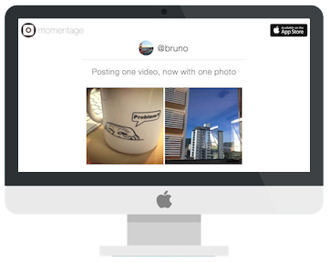

Work
Momentage

Momentage is an iOS app that lets people share photos and videos of the moments in their lives. I played a central role in the design and development of the Momentage
website and made the site responsive across multiple devices and screen sizes. I also
redesigned Moments view pages (example), to improve the UX & UI, removing hundreds of lines of code in the process.